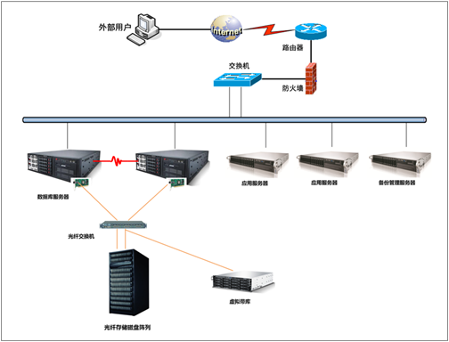
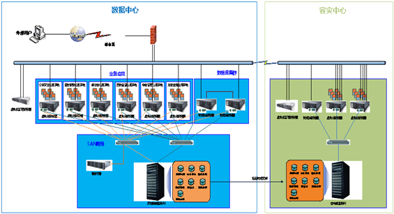

基层医疗卫生管理信息系统
方案概述
按照深化和推进国家基层医疗卫生机构综合改革的总体要求，在整合已有信息资源的基础上，结合省平台的具体情况，以省卫生厅统一建设涵盖基本药物使用、居民健康档案管理为基础的公共卫生服务、基本医疗服务、综合管理绩效考核等基本功能的基层医疗卫生机构管理信息系统，实现与新农合、医保、药监等系统的有效衔接，为提升基层医疗卫生机构规范化服务质量和水平提供信息技术支撑。本方案主要适用于把基层医疗卫生管理信息系统建设到省厅平台、市级医疗卫生平台。基层医疗卫生机构主要指乡镇卫生院、村卫生室、社区卫生服务中心与社区卫生服务站等机构。目前，省级和市级卫生厅平台，现有业务系统比较独立，并且没有针对基层医疗卫生管理信息系统整合现有的业务系统，每个业务系统都是孤岛式部署，需要进行系统的统一平台建设；现有省、市卫生管理部门缺乏对基层医疗机构医疗信息的统一管理和信息系统的调度和决策。
方案架构
【浪潮基础设施建设方案】
在现有卫生资源基础上，以省为单位建设涵盖基本药物使用、居民健康档案管理、基本医疗服务、绩效考核等基本功能的基层医疗卫生机构管理信息系统。各省可结合本省的实际情况选择不同的建设模式。
1.系统分级部署建设方案
依据国家已颁布的卫生信息标准和技术规范，以省为单位统一规划，统筹管理，统一设计，统一组织实施，分级建设信息系统，为基层医疗卫生机构和相关政府部门提供服务，并在基层医疗卫生机构建立应用终端系统。

基础设施是支撑整个基层医疗卫生信息系统正常运行的基础设施资源、软硬件及网络等资源，主要包括三个方面的内容：系统软件、系统硬件及网络环境等。
1）系统软件包括：操作系统、数据库、基础软件、系统管理软件、安全及访问控制软件等。
2）系统硬件基础设施包括：X86服务器浪潮高端TS860八路服务器、四路服务器都是数据库服务器的优良选择，浪潮AS8000-M2、AS8000M3、AS1100H、AS1000G6、AS510H等存储产品、SSR等安全及访问控制等相关的硬件基础设施。
3）网络环境包括交换机、路由器、防火墙、VPN等网络设备、安全设备、容灾备份等。
基层医疗卫生机构信息管理系统的服务器主要包括应用服务器和数据库服务器，均采用单独服务器部署，对于数据库服务器，则采用双机热备的模式，保证数据库系统的可用性，浪潮BCP双机软件可以作为数据库服务器的集群。此外，系统管理、安全等系统可能也部署在单独的服务器上。
2．系统集中部署建设方案
如果省内大部分基层医疗机构没有信息化，那么按照传统的模式部署，投入大、建设时间长。可依据国家已颁布的卫生信息标准和技术规范，在确保信息安全的前提下，依托云计算相关技术，建设、运营和维护基层医疗卫生机构管理信息系统数据中心，为基层医疗卫生机构和相关政府部门提供服务。并在基层医疗卫生机构建立应用终端系统。

云计算是采用池化的办法，把服务器、存储、网络等资源按照不同的标准组织成不同的资源池。通过资源池的管理模式，云计算管理员无需去考虑具体的服务器、存储和网络配置。云计算数据中心可以自动管理和动态分配、部署、配置、重新配置以及回收资源，也可以自动安装软件和应用。用户可以自己定义虚拟基础架构的构成，如服务器配置、数量，存储类型和大小等等。
纳入云计算数据中心的软硬件资源中硬件包括x86服务器、存储设备、交换机和路由器等网络设备。软件可以包括各种操作系统、中间件、数据库及应用。云计算数据中心管理软件专门用于提供云计算服务。
方案价值
通过建立基层医疗机构统一信息系统平台，有效的解决了以往患者数据安全问题，保证信息系统与数据的安全有效，可以通过集中的管理平台，设置统一的安全策略，保证基层医疗机构信息系统安全稳定运行。 基层医疗机构信息平台的统一部署，解决了基层医疗机构各个系统兼容性的问题，保证了业务应用系统不因软硬件平台兼容性的问题降低对外服务的效率，部署统一模式的平台，可以统计对外提供访问接口，或者对外提供开发者接口，可以通过后续新入信息系统的快速接入，更好的满足现有以及未来医疗信息系统的部署。